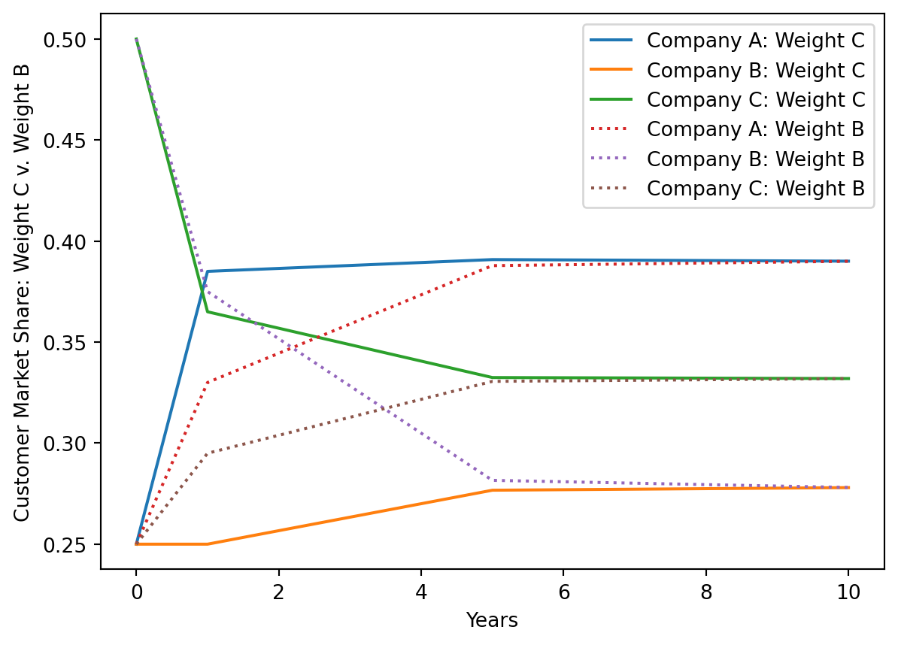
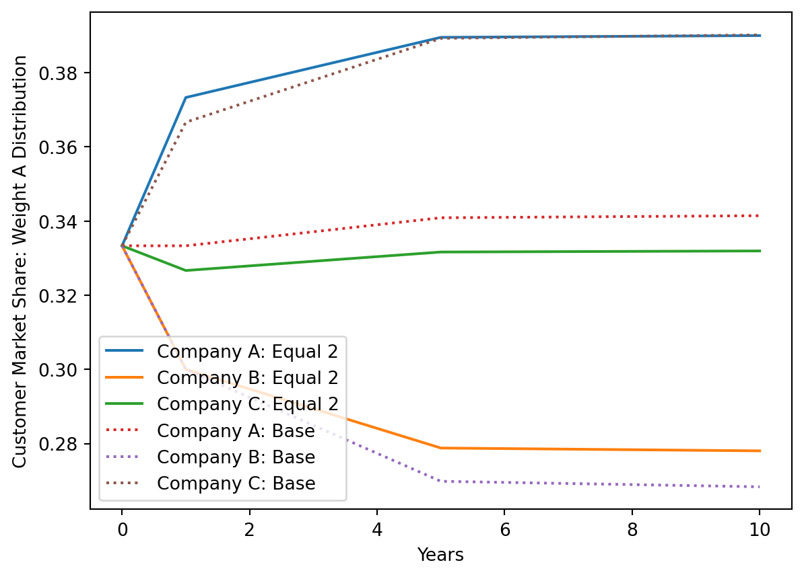
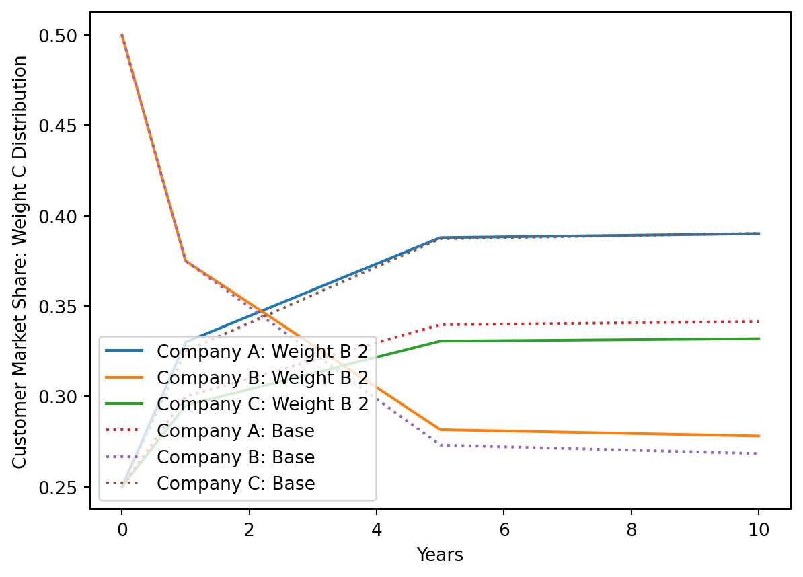

import sympy as sp
import matplotlib.pyplot as plt
import numpy as npMarkov Chains
In this problem, we are calculating the effectivness of different marketing strategies on distribution vectors representing a companies market share. We will be trying to optimize the plan so that we provide Company A with the most market share.
First, I will construct the original market conclusions as a Markov chain and demonstrate its effects after 3 years.
# Markov chain
M = sp.Matrix([
[0.5, 0.2, 0.3],
[0.2, 0.6, 0.1],
[0.3, 0.2, 0.6]
])orig = sp.Matrix([sp.Rational(1,3), sp.Rational(1,3), sp.Rational(1,3)])
(M**3)*orig\(\displaystyle \left[\begin{matrix}0.339\\0.275333333333333\\0.385666666666667\end{matrix}\right]\)
As demonstrated, after 3 years, the Markov chain slightly favors C, with B being the least favored
Now, we consider Plan 1 and Plan 2, as denoted by variables plan1 and plan2 respectively.
plan1 = sp.Matrix([
[0.5, 0.2 + .6*0.2, 0.3],
[0.2, 0.6*.8, 0.1],
[0.3, 0.2, 0.6]
])
plan2 = sp.Matrix([
[0.5, 0.2, 0.3+0.6*.2],
[0.2, 0.6, 0.1],
[0.3, 0.2, 0.6*0.8]
])We will create 4 vectors, representing 4 different distribution types. The first vector will have an equal distribution, with variable equal. The next three vectors will have 50% of the population weighted on company A, B, C respectively with the other two sharing an equal 25% population distribution.
equal = sp.Matrix([sp.Rational(1,3), sp.Rational(1,3), sp.Rational(1,3)])This function creates n vectors, where n is equal to the count of companies. For a given company i, i in [1,n], each (n-i)th item in the resulting list is the distribution that favors i and equally distributes the other n-1 companies.
def weight_distributor(distribution, company_count = 3):
result = []
for i in range(company_count):
cur_list = []
for j in range(company_count):
cur_list.append(distribution[(j + i)%company_count])
cur = sp.Matrix(cur_list)
result.append(cur)
return result[::-1]The function returns the desired weight vectors. From now on, weights[0] represents the weighted distribution for Company A, weights[1] for Company B, and weights[2] for Company C.
distribution = [sp.Rational(25, 100), sp.Rational(25,100), sp.Rational(50,100)]
weights = [equal] + weight_distributor([sp.Rational(25, 100), sp.Rational(25,100), sp.Rational(50,100)])This function returns the states for all weights, with the ith component representing the ith weight under the given plan after 0 years, 1 year, 5 years, and 10 years.
def state_calculator(weights, plan):
states = []
for weight in weights:
states.append([weight, (plan ** 1)*weight, (plan ** 5)*weight, (plan ** 10)*weight])
return statesCalculating states for 0, 1, 5, and 10 years for equal distributions and then 50, 25, 25 distributions for all companies.
# Varying states for plan 1
plan1_states = state_calculator(weights, plan1)
# Varying states for plan 2
plan2_states = state_calculator(weights, plan2)time = [0,1,5,10]
companies = ['A', 'B', 'C']
companies_labels = {'A': 0, 'B': 1, 'C': 3}This function finds the maximum distribution of a given company under a given plan after 10 years and which distribution was best. The next one finds the minimum.
# Find company max distribution
def plan_max(company, plan):
result = plan[0][3][company]
dis = 0
if result < plan[1][3][company]:
result = plan[1][3][company]
dis = 1
if result < plan[2][3][company]:
result = plan[2][3][company]
dis = 2
if result < plan[3][3][company]:
result = plan[3][3][company]
dis = 3
return result, disAs you learn to code, this can be a useful trick. I selected the above code and asked CoPilot “simplify this”. Here is what it gave me:
def plan_max(company, plan):
result = plan[0][3][company]
dis = 0
for i in range(1, 4):
if result < plan[i][3][company]:
result = plan[i][3][company]
dis = i
return result, disThis put the repeated code into a loop. I find it a little bit harder to understand, but it’s also harder to make a mistake when you write the code only once. But we can do better:
I again asked CoPilot to simplify. This time I said “simplify this using np.min”. Here is what I got:
def plan_max(company, plan):
result = np.min(plan[0][3][company])
dis = np.argmin(plan[0][3][company])
return result, disWell, here is we need to be careful! This result looks good, but it won’t actually work. Can you see why? (One reason is that I asked it to use “min”, where “max” would have been better. I was confused by the “<” signs in your code; I had to read it again to understand that you were indeed finding a max. But there’s even a much bigger problem..)
I tried again. This time I said “simplify this using min instead of the loop”. I was given:
def plan_max(company, plan):
result = np.max(plan[:, 3, company])
dis = np.argmax(plan[:, 3, company])
return result, disThis one I believe should work. I’m going to test it…
# Find company max distribution
def plan_min(company, plan):
result = plan[0][3][company]
dis = 0
if result > plan[1][3][company]:
result = plan[1][3][company]
dis = 1
if result > plan[2][3][company]:
result = plan[2][3][company]
dis = 2
if result > plan[3][3][company]:
result = plan[3][3][company]
dis = 3
return result, disWe now calculate Company A’s performance under the original plan based on our 4 different distributions.
base = sp.Matrix([((M**10)*weights[0])[0], ((M**10)*weights[1])[0], ((M**10)*weights[2])[0], ((M**10)*weights[3])[0]])I’m guessing that calculating M**10 is a bit slow for Sympy! I’d calculate it once and store it…
For comparison, we calculate the base states using the original plan.
base_states = state_calculator(weights, M)We now look at Company A’s distribution under different distributions after 10 years.
plan1_dis = sp.Matrix([plan1_states[0][3][companies_labels['A']], plan1_states[1][3][companies_labels['A']], plan1_states[2][3][companies_labels['A']], plan1_states[3][3][companies_labels['A']]])
plan2_dis = sp.Matrix([plan2_states[0][3][companies_labels['A']], plan2_states[1][3][companies_labels['A']], plan2_states[2][3][companies_labels['A']], plan2_states[3][3][companies_labels['A']]])These next two blocks compute the sum of the difference of plan 1 or plan 2’s distribution for A after 10 years compared to the A’s performance under the base plan.
sum(plan1_dis - base)\(\displaystyle 0.156465181152655\)
plan1_dis - base\(\displaystyle \left[\begin{matrix}0.0391162952881637\\0.0391123655075863\\0.0391439122722667\\0.0390926080846383\end{matrix}\right]\)
sum(plan2_dis - base)\(\displaystyle 0.194330292122828\)
plan2_dis - base\(\displaystyle \left[\begin{matrix}0.048582573030707\\0.0485857956136774\\0.0485811891277593\\0.0485807343506842\end{matrix}\right]\)
plan2_dis - plan1_dis\(\displaystyle \left[\begin{matrix}0.00946627774254322\\0.00947343010609109\\0.00943727685549262\\0.00948812626604584\end{matrix}\right]\)
As demonstrated, both plans provide positive results for A after 10 years. As a long term strategy both are optimal. However, as we can see, plan 2 provides slightly better performance than plan 1. Thus, we choose plan 2.
We now find the max of each plan
plan_max(0, plan2_states)(0.390054582225684, 3)plan_min(0, plan2_states)(0.390005782377759, 2)plan2_dis\(\displaystyle \left[\begin{matrix}0.390033780497374\\0.390040976888677\\0.390005782377759\\0.390054582225684\end{matrix}\right]\)
As demonstrated, we can see that overall, Plan 2 performs the best in terms of Company A’s long term market-share. This is based 4 distributions: equal distribution, and 50%, 25%, 25% market shares for each company. Interestingly, plan 2 performs. We will now overlay Plan 2’s best performance distribution compared to its worst performance distribution: Weight C v. Weight B
# Plan 1: Equal distribution
market = plan2_states[3]
for i in range(3):
plt.plot(time, [market[0][i], market[1][i], market[2][i], market[3][i]], label=f"Company {companies[i]}: Weight C")
market = plan2_states[2]
for i in range(3):
plt.plot(time, [market[0][i], market[1][i], market[2][i], market[3][i]], label=f"Company {companies[i]}: Weight B", linestyle=":")
plt.ylabel('Customer Market Share: Weight C v. Weight B')
plt.xlabel('Years')
plt.legend()
plt.show()
As demonstrated, Company A’s performance evens out through all distributions. We will now overlay a few distributions comparing the original plan to Plan 2.
market = plan2_states[0]
for i in range(3):
plt.plot(time, [market[0][i], market[1][i], market[2][i], market[3][i]], label=f"Company {companies[i]}: Equal 2")
market = base_states[0]
for i in range(3):
plt.plot(time, [market[0][i], market[1][i], market[2][i], market[3][i]], label=f"Company {companies[i]}: Base", linestyle=":")
plt.ylabel('Customer Market Share: Weight A Distribution')
plt.xlabel('Years')
plt.legend(loc=3)
plt.show()
market = plan2_states[1]
for i in range(3):
plt.plot(time, [market[0][i], market[1][i], market[2][i], market[3][i]], label=f"Company {companies[i]}: Weight A 2")
market = base_states[1]
for i in range(3):
plt.plot(time, [market[0][i], market[1][i], market[2][i], market[3][i]], label=f"Company {companies[i]}: Base", linestyle=":")
plt.ylabel('Customer Market Share: Weight B Distribution')
plt.xlabel('Years')
plt.legend(loc=3)
plt.show()
market = plan2_states[2]
for i in range(3):
plt.plot(time, [market[0][i], market[1][i], market[2][i], market[3][i]], label=f"Company {companies[i]}: Weight B 2")
market = base_states[2]
for i in range(3):
plt.plot(time, [market[0][i], market[1][i], market[2][i], market[3][i]], label=f"Company {companies[i]}: Base", linestyle=":")
plt.ylabel('Customer Market Share: Weight C Distribution')
plt.xlabel('Years')
plt.legend(loc=3)
plt.show()
market = plan2_states[3]
for i in range(3):
plt.plot(time, [market[0][i], market[1][i], market[2][i], market[3][i]], label=f"Company {companies[i]}: Weight C 2")
market = base_states[3]
for i in range(3):
plt.plot(time, [market[0][i], market[1][i], market[2][i], market[3][i]], label=f"Company {companies[i]}: Base", linestyle=":")
plt.ylabel('Customer Market Share: Weight C')
plt.xlabel('Years')
plt.legend(loc=3)
plt.show()
As demonstrated, A performs consistently better under Plan 2 than the original plan. Thus, we can see that it would be ideal for the company to undergo marketing strategies to implement plan 2. For exceptional circumstances, we consider a market in which we start with 0% of the user base. However, as displayed below, even if we start with 0 market share, our new marketing strategy will propel us to the largest market holder within a 10 year period.
(plan2 ** 10) * sp.Matrix([0.0, 0.99, .01])\(\displaystyle \left[\begin{matrix}0.389923740012833\\0.278200270113832\\0.331875989873334\end{matrix}\right]\)
Sports Ranking
In this problem, we are attempting to rank teams based on a win graph. We will iterate through the PowerRank, reverse PageRank, and weighted win techniques to determine the best team.
# Do imports
import networkx as nx
import matplotlib.pyplot as plt
import scipy
import numpy as npHere we just set-up a graph using the given nodes and edges
# Create a directed graph
G = nx.DiGraph()
# Add nodes
G.add_nodes_from([1, 2, 3, 4, 5, 6, 7])
# Add vertices
edges = [(1,2),(7,3),(2,4),(4,5),(3,2),(5,1),(6,1),(3,1),(7,2),(2,6), (3, 4), (7,4),(5,7),(6,4),(3,5),(5,6),(7,1),(5,2),(7,6),(1,4),(6,3)]
G.add_edges_from(edges)
# Draw the graph
nx.draw_circular(G, with_labels=True)
plt.show()
We calculate the adjacency matrix of this matrix. Rows represents where the edge originates. Columns represent where they end up
adj_matrix = nx.adjacency_matrix(G).toarray()
adj_matrixarray([[0, 1, 0, 1, 0, 0, 0],
[0, 0, 0, 1, 0, 1, 0],
[1, 1, 0, 1, 1, 0, 0],
[0, 0, 0, 0, 1, 0, 0],
[1, 1, 0, 0, 0, 1, 1],
[1, 0, 1, 1, 0, 0, 0],
[1, 1, 1, 1, 0, 1, 0]])The power matrix is one method of calculating the most “winning” team. An entry a_(ij) in the adjacency matrix indicates a win from team j on team i. An entry b_(ij) in the adjacency matrix squared represents how many teams that team j has beaten that have beaten another team. As we can see, when we take the sum of those two matrices, we are left with our power matrix. What we can infer from the power matrix is that the sum of each row represents how many teams a team has beaten plus how many “winning” teams they have beaten.
# Power Matrix
power_matrix = adj_matrix + adj_matrix ** 2
power_matrixarray([[0, 2, 0, 2, 0, 0, 0],
[0, 0, 0, 2, 0, 2, 0],
[2, 2, 0, 2, 2, 0, 0],
[0, 0, 0, 0, 2, 0, 0],
[2, 2, 0, 0, 0, 2, 2],
[2, 0, 2, 2, 0, 0, 0],
[2, 2, 2, 2, 0, 2, 0]])Thus, when we calculate the sum of each row of the power matrix, we can rank the teams, sorting by highest sum to lowest.
# Calculating team ranking with the power matrix
power_sum = [sum(power_matrix[i]) for i in range(7)]
rrank = np.argsort(power_sum)
rank = np.flip(rrank + 1)
rankarray([7, 5, 3, 6, 2, 1, 4])As can be seen, using the power matrix, team 7 seems to be the most “winning” team, which seems to be the case when analyzing the power matrix visually. Team 7 seems to have the most teams beaten + winning teams beaten
To perform reverse pagerank, we must first find the adjacency matrix of the reverse graph, which is just the transpose of the adjacency matrix. We then want to multiply it by a diagonal matrix D which turns the columns of our reverse adjacency matrix into distribution vectors. This will allow us to perform the pagerank algorithm to solve for x. We know that PageRank allows us to determine the importance of a node. However, if we reverse PageRank, we are able to calculate the “sphere of influence” that a node has, i.e. how many other teams a single team has affected. In this case, “affecting” a team indicates beating them.
# Calculating team ranking with reverse pagerank: calculate diagonal matrix D
adjT = adj_matrix.T
D = np.zeros((7, 7))
for i in range(7):
D[i][i] = 1 / sum(adjT[i])Here we follow the steps of the pagerank matrix, using the given alpha and teleporation vectors to ensure that our multiplication does not end prematurely due to a row/column of 0s.
# Determine P = ATD -> (AT)TD = AD with alpha a = 0.85, teleporation vector 1/7 e_7)
P = sp.Matrix(sp.Matrix(adj_matrix) * sp.Matrix(D))
a = 0.85
v = sp.Matrix(np.ones(7) * 1/7)We solve for x and are left with the influence of each team. We then sort by lowest to highest and flip to find the team with the most influence.
# Solve for x
M = (sp.eye(7) - a * P)
b = (1 - a) * v
sol = M.solve(b)
x = np.array([sol[i] for i in range(7)], dtype='float')
xarray([0.05966732, 0.07966581, 0.17626964, 0.12535158, 0.24452472,
0.13033224, 0.18418869])# Find ranking
pr_rank = np.flip(np.argsort(x))+1
pr_rankarray([5, 7, 3, 6, 4, 2, 1])We see now that 5 is at top. This may be explained by the fact that 5 has beaten 7, such that 5 has beaten the team that has won the most. Therefore, it should exert the most “influence” amongst teams since has beaten the most winning team.
We will now weight our graph so that we can perform a weighted power ranking.
# Create a weighted directed graph
G = nx.DiGraph()
# Add nodes
G.add_nodes_from([1, 2, 3, 4, 5, 6, 7])
# Add vertices
edges = [(1,2),(7,3),(2,4),(4,5),(3,2),(5,1),(6,1),(3,1),(7,2),(2,6), (3, 4), (7,4),(5,7),(6,4),(3,5),(5,6),(7,1),(5,2),(7,6),(1,4),(6,3)]
length = len(edges)
weight = [4,8,7,3,7,7,23,15,6,18,13,14,7,13,7,18,45,10,19,14,13]
for i in range(length):
G.add_edge(edges[i][0], edges[i][1], weight=weight[i])
pos = nx.spring_layout(G, seed=7) # positions for all nodes - seed for reproducibility
# nodes
nx.draw_networkx_nodes(G, pos, node_size=700)
# edges
nx.draw_networkx_edges(G, pos, edgelist=edges, width=1)
# node labels
nx.draw_networkx_labels(G, pos, font_size=20, font_family="sans-serif")
# edge weight labels
edge_labels = nx.get_edge_attributes(G, "weight")
nx.draw_networkx_edge_labels(G, pos, edge_labels)
plt.show()
We now find take adjacency matrix of the graph and then replace the edge indicators with the weight of the each edge.
# Replace adjacency booleans with weights
weight_adj = adj_matrix
for i in range(length):
weight_adj[edges[i][0]-1, edges[i][1]-1] = weight[i]
weight_adjarray([[ 0, 4, 0, 14, 0, 0, 0],
[ 0, 0, 0, 7, 0, 18, 0],
[15, 7, 0, 13, 7, 0, 0],
[ 0, 0, 0, 0, 3, 0, 0],
[ 7, 10, 0, 0, 0, 18, 7],
[23, 0, 13, 13, 0, 0, 0],
[45, 6, 8, 14, 0, 19, 0]])We now follow the same steps to rank the teams, first using the power matrix technique
weight_power = weight_adj + weight_adj**2
weight_power_sum = [sum(weight_power[i]) for i in range(7)]
rrank_weight = np.argsort(weight_power_sum)
rank_weight = np.flip(rrank_weight + 1)
rank_weightarray([7, 6, 5, 3, 2, 1, 4])Here we see that 7 is ranked at the top once again, most likely due to the fact that it has the most wins and the mots dominant win, with 45 points against team 1.
Now, we use reverse pagerank again.
# Calculating team ranking with reverse pagerank: calculate diagonal matrix D
adjT_weight = weight_adj.T
D = np.zeros((7, 7))
for i in range(7):
D[i][i] = 1 / sum(adjT_weight[i])
# Determine P = ATD -> (AT)TD = AD with alpha a = 0.85, teleporation vector 1/7 e_7)
P = sp.Matrix(sp.Matrix(weight_adj) * sp.Matrix(D))
a = 0.85
v = sp.Matrix(np.ones(7) * 1/7)
# Solve for x
M = (sp.eye(7) - a * P)
b = (1 - a) * v
sol = M.solve(b)
x = np.array([sol[i] for i in range(7)], dtype='float')
# Find ranking
pr_rank = np.flip(np.argsort(x))+1
pr_rankarray([5, 3, 7, 6, 4, 2, 1])We can see that weighting the edges have changed the order of our rankings. Although 7 and 5 both remained high up on their performance, we can see that 6 rose in rankings during the weighted Reverse PageRank. This is likely due to the fact that team 6 had a strong performance against team 3, who has had many strong performances against other teams.
Iso Rank
In this problem, we attempt to imperfectly map graphs onto other graphs. Specifically, mappings that are not bijections, such that there is no perfect 1-1 mapping of the nodes.
We first create our graphs as adjaceny matrices.
# Construct adjacency matrices for A,B,C,D,E and 1,2,3,4,5
# G1 = A,B,C,D,E
# G2 = 1,2,3,4,5
np_G1 = np.matrix([
[0,1,1,0,1],
[1,0,0,1,0],
[1,0,0,0,0],
[0,1,0,0,0],
[1,0,0,0,0]
], dtype='float')
np_G2 = np.matrix([
[0,0,1,0,0],
[0,0,1,0,0],
[1,1,0,1,0],
[0,0,1,0,1],
[0,0,0,1,0]
], dtype='float')
G1T = np_G1.transpose()
G2T = np_G2.transpose()
for i in range(5):
G1T[i] /= np.sum(G1T[i])
G2T[i] /= np.sum(G2T[i])
G1 = sp.Matrix(np.transpose(G1T))
G2 = sp.Matrix(np.transpose(G2T))
G2\(\displaystyle \left[\begin{matrix}0 & 0 & 0.333333333333333 & 0 & 0\\0 & 0 & 0.333333333333333 & 0 & 0\\1.0 & 1.0 & 0 & 0.5 & 0\\0 & 0 & 0.333333333333333 & 0 & 1.0\\0 & 0 & 0 & 0.5 & 0\end{matrix}\right]\)
We then create a surfing matrix which is represented as a multiplication of each element of G2 with the entire graph of G1 (e.g. M[0:2][0:2] = G2[0][0] * G1).
# Construct G2 x G1 (Outer x Inner) surfing matrix
M = sp.zeros(25)
for h in range(5):
for k in range(5):
for i in range(5):
for j in range(5):
M[i+5*(h), j+5*(k)] = G2[h, k] * G1[i, j]
M\(\displaystyle \left[\begin{array}{ccccccccccccccccccccccccc}0 & 0 & 0 & 0 & 0 & 0 & 0 & 0 & 0 & 0 & 0 & 0.166666666666667 & 0.333333333333333 & 0 & 0.333333333333333 & 0 & 0 & 0 & 0 & 0 & 0 & 0 & 0 & 0 & 0\\0 & 0 & 0 & 0 & 0 & 0 & 0 & 0 & 0 & 0 & 0.111111111111111 & 0 & 0 & 0.333333333333333 & 0 & 0 & 0 & 0 & 0 & 0 & 0 & 0 & 0 & 0 & 0\\0 & 0 & 0 & 0 & 0 & 0 & 0 & 0 & 0 & 0 & 0.111111111111111 & 0 & 0 & 0 & 0 & 0 & 0 & 0 & 0 & 0 & 0 & 0 & 0 & 0 & 0\\0 & 0 & 0 & 0 & 0 & 0 & 0 & 0 & 0 & 0 & 0 & 0.166666666666667 & 0 & 0 & 0 & 0 & 0 & 0 & 0 & 0 & 0 & 0 & 0 & 0 & 0\\0 & 0 & 0 & 0 & 0 & 0 & 0 & 0 & 0 & 0 & 0.111111111111111 & 0 & 0 & 0 & 0 & 0 & 0 & 0 & 0 & 0 & 0 & 0 & 0 & 0 & 0\\0 & 0 & 0 & 0 & 0 & 0 & 0 & 0 & 0 & 0 & 0 & 0.166666666666667 & 0.333333333333333 & 0 & 0.333333333333333 & 0 & 0 & 0 & 0 & 0 & 0 & 0 & 0 & 0 & 0\\0 & 0 & 0 & 0 & 0 & 0 & 0 & 0 & 0 & 0 & 0.111111111111111 & 0 & 0 & 0.333333333333333 & 0 & 0 & 0 & 0 & 0 & 0 & 0 & 0 & 0 & 0 & 0\\0 & 0 & 0 & 0 & 0 & 0 & 0 & 0 & 0 & 0 & 0.111111111111111 & 0 & 0 & 0 & 0 & 0 & 0 & 0 & 0 & 0 & 0 & 0 & 0 & 0 & 0\\0 & 0 & 0 & 0 & 0 & 0 & 0 & 0 & 0 & 0 & 0 & 0.166666666666667 & 0 & 0 & 0 & 0 & 0 & 0 & 0 & 0 & 0 & 0 & 0 & 0 & 0\\0 & 0 & 0 & 0 & 0 & 0 & 0 & 0 & 0 & 0 & 0.111111111111111 & 0 & 0 & 0 & 0 & 0 & 0 & 0 & 0 & 0 & 0 & 0 & 0 & 0 & 0\\0 & 0.5 & 1.0 & 0 & 1.0 & 0 & 0.5 & 1.0 & 0 & 1.0 & 0 & 0 & 0 & 0 & 0 & 0 & 0.25 & 0.5 & 0 & 0.5 & 0 & 0 & 0 & 0 & 0\\0.333333333333333 & 0 & 0 & 1.0 & 0 & 0.333333333333333 & 0 & 0 & 1.0 & 0 & 0 & 0 & 0 & 0 & 0 & 0.166666666666667 & 0 & 0 & 0.5 & 0 & 0 & 0 & 0 & 0 & 0\\0.333333333333333 & 0 & 0 & 0 & 0 & 0.333333333333333 & 0 & 0 & 0 & 0 & 0 & 0 & 0 & 0 & 0 & 0.166666666666667 & 0 & 0 & 0 & 0 & 0 & 0 & 0 & 0 & 0\\0 & 0.5 & 0 & 0 & 0 & 0 & 0.5 & 0 & 0 & 0 & 0 & 0 & 0 & 0 & 0 & 0 & 0.25 & 0 & 0 & 0 & 0 & 0 & 0 & 0 & 0\\0.333333333333333 & 0 & 0 & 0 & 0 & 0.333333333333333 & 0 & 0 & 0 & 0 & 0 & 0 & 0 & 0 & 0 & 0.166666666666667 & 0 & 0 & 0 & 0 & 0 & 0 & 0 & 0 & 0\\0 & 0 & 0 & 0 & 0 & 0 & 0 & 0 & 0 & 0 & 0 & 0.166666666666667 & 0.333333333333333 & 0 & 0.333333333333333 & 0 & 0 & 0 & 0 & 0 & 0 & 0.5 & 1.0 & 0 & 1.0\\0 & 0 & 0 & 0 & 0 & 0 & 0 & 0 & 0 & 0 & 0.111111111111111 & 0 & 0 & 0.333333333333333 & 0 & 0 & 0 & 0 & 0 & 0 & 0.333333333333333 & 0 & 0 & 1.0 & 0\\0 & 0 & 0 & 0 & 0 & 0 & 0 & 0 & 0 & 0 & 0.111111111111111 & 0 & 0 & 0 & 0 & 0 & 0 & 0 & 0 & 0 & 0.333333333333333 & 0 & 0 & 0 & 0\\0 & 0 & 0 & 0 & 0 & 0 & 0 & 0 & 0 & 0 & 0 & 0.166666666666667 & 0 & 0 & 0 & 0 & 0 & 0 & 0 & 0 & 0 & 0.5 & 0 & 0 & 0\\0 & 0 & 0 & 0 & 0 & 0 & 0 & 0 & 0 & 0 & 0.111111111111111 & 0 & 0 & 0 & 0 & 0 & 0 & 0 & 0 & 0 & 0.333333333333333 & 0 & 0 & 0 & 0\\0 & 0 & 0 & 0 & 0 & 0 & 0 & 0 & 0 & 0 & 0 & 0 & 0 & 0 & 0 & 0 & 0.25 & 0.5 & 0 & 0.5 & 0 & 0 & 0 & 0 & 0\\0 & 0 & 0 & 0 & 0 & 0 & 0 & 0 & 0 & 0 & 0 & 0 & 0 & 0 & 0 & 0.166666666666667 & 0 & 0 & 0.5 & 0 & 0 & 0 & 0 & 0 & 0\\0 & 0 & 0 & 0 & 0 & 0 & 0 & 0 & 0 & 0 & 0 & 0 & 0 & 0 & 0 & 0.166666666666667 & 0 & 0 & 0 & 0 & 0 & 0 & 0 & 0 & 0\\0 & 0 & 0 & 0 & 0 & 0 & 0 & 0 & 0 & 0 & 0 & 0 & 0 & 0 & 0 & 0 & 0.25 & 0 & 0 & 0 & 0 & 0 & 0 & 0 & 0\\0 & 0 & 0 & 0 & 0 & 0 & 0 & 0 & 0 & 0 & 0 & 0 & 0 & 0 & 0 & 0.166666666666667 & 0 & 0 & 0 & 0 & 0 & 0 & 0 & 0 & 0\end{array}\right]\)
Using this surfing matrix, we then solve for x using the PageRank formula. From here, we are then giving a list of node pairings from G1 to G2. Every 5 values represents all the nodes from G1 (A, B, C, D, E) and how closely related they are to node i in G2 (e.g. values 6-10 are the closeness of nodes A, B, C, D, and E to node 2)
# Calculate x given alpha = 0.85, v = 1/25 * e25
a = 0.85
v = 1/25 * sp.Matrix(np.ones(25))
mat = (sp.eye(25) - a * M)
b = (1-a)*v
x = mat.solve(b)
x\(\displaystyle \left[\begin{matrix}0.0422740152656166\\0.032389985878358\\0.0191626479069361\\0.0183187399484339\\0.0191626479069361\\0.0422740152656166\\0.032389985878358\\0.0191626479069361\\0.0183187399484339\\0.0191626479069361\\0.139369213132264\\0.0869558114007097\\0.0422740152656167\\0.0466847222520773\\0.0422740152656166\\0.0869558114007097\\0.0618975729669319\\0.0323899858783579\\0.0318586781711893\\0.0323899858783579\\0.0466847222520773\\0.0318586781711893\\0.0183187399484339\\0.019153234255473\\0.0183187399484339\end{matrix}\right]\)
We then tabulate this data, and attempt to match nodes by removing the element with the highest value. This corresponds to the nodes from G1 and G2 that have the highest correspondence. We then remove that elements respective row and column as to not match the next nodes with an already matched pair. While we could perform this as a function, we will notice in further examples that some matchings the exact same correspondence value, and thus the function may return arbitrary results. As such, we choose to do this by hand.
import math
iso = sp.zeros(5,5)
for i in range(5):
for j in range(5):
iso[i, j] = x[i + 5 * j]
temp = iso
iso\(\displaystyle \left[\begin{matrix}0.0422740152656166 & 0.0422740152656166 & 0.139369213132264 & 0.0869558114007097 & 0.0466847222520773\\0.032389985878358 & 0.032389985878358 & 0.0869558114007097 & 0.0618975729669319 & 0.0318586781711893\\0.0191626479069361 & 0.0191626479069361 & 0.0422740152656167 & 0.0323899858783579 & 0.0183187399484339\\0.0183187399484339 & 0.0183187399484339 & 0.0466847222520773 & 0.0318586781711893 & 0.019153234255473\\0.0191626479069361 & 0.0191626479069361 & 0.0422740152656166 & 0.0323899858783579 & 0.0183187399484339\end{matrix}\right]\)
Row Labels: A,B,C,D,E. Column Labels: 1,2,3,4,5. Thus, the best match is immediately A:3
temp.row_del(0)
temp.col_del(2)
temp\(\displaystyle \left[\begin{matrix}0.032389985878358 & 0.032389985878358 & 0.0618975729669319 & 0.0318586781711893\\0.0191626479069361 & 0.0191626479069361 & 0.0323899858783579 & 0.0183187399484339\\0.0183187399484339 & 0.0183187399484339 & 0.0318586781711893 & 0.019153234255473\\0.0191626479069361 & 0.0191626479069361 & 0.0323899858783579 & 0.0183187399484339\end{matrix}\right]\)
Next match is clearly B:4
temp.row_del(0)
temp.col_del(2)
temp\(\displaystyle \left[\begin{matrix}0.0191626479069361 & 0.0191626479069361 & 0.0183187399484339\\0.0183187399484339 & 0.0183187399484339 & 0.019153234255473\\0.0191626479069361 & 0.0191626479069361 & 0.0183187399484339\end{matrix}\right]\)
Next choice C:1, C:2, E:1, E:2. We choose E:1
temp.row_del(2)
temp.col_del(0)
temp\(\displaystyle \left[\begin{matrix}0.0191626479069361 & 0.0183187399484339\\0.0183187399484339 & 0.019153234255473\end{matrix}\right]\)
We round-off with C:2, D:5. Thus, our final matching is A:3, B:4, C:2, D:5, E:1. This is 100% accurate with our original graph, thus we have found a bijective mapping.
We now consider Figure 2.12 with e = {B,C} removed. We will perform the same steps of constructing a surfing matrix and matching.
# G1 = P, G2 = Q
np_P = np.matrix([
[0,1,1],
[1,0,1],
[1,1,0]
], dtype='float')
np_Q = np.matrix([
[0,1,0,1,0],
[1,0,0,1,0],
[0,0,0,1,0],
[1,1,1,0,1],
[0,0,0,1,0]
], dtype='float')
PT = np_P.transpose()
QT = np_Q.transpose()
for i in range(5):
QT[i] /= np.sum(QT[i])
for i in range(3):
PT[i] /= np.sum(PT[i])
P = sp.Matrix(np.transpose(PT))
Q = sp.Matrix(np.transpose(QT))
P\(\displaystyle \left[\begin{matrix}0 & 0.5 & 0.5\\0.5 & 0 & 0.5\\0.5 & 0.5 & 0\end{matrix}\right]\)
# Contruct N = Q x P
N = sp.zeros(15)
for h in range(5):
for k in range(5):
for i in range(3):
for j in range(3):
N[i+3*(h), j+3*(k)] = Q[h, k] * P[i, j]
N\(\displaystyle \left[\begin{array}{ccccccccccccccc}0 & 0 & 0 & 0 & 0.25 & 0.25 & 0 & 0 & 0 & 0 & 0.125 & 0.125 & 0 & 0 & 0\\0 & 0 & 0 & 0.25 & 0 & 0.25 & 0 & 0 & 0 & 0.125 & 0 & 0.125 & 0 & 0 & 0\\0 & 0 & 0 & 0.25 & 0.25 & 0 & 0 & 0 & 0 & 0.125 & 0.125 & 0 & 0 & 0 & 0\\0 & 0.25 & 0.25 & 0 & 0 & 0 & 0 & 0 & 0 & 0 & 0.125 & 0.125 & 0 & 0 & 0\\0.25 & 0 & 0.25 & 0 & 0 & 0 & 0 & 0 & 0 & 0.125 & 0 & 0.125 & 0 & 0 & 0\\0.25 & 0.25 & 0 & 0 & 0 & 0 & 0 & 0 & 0 & 0.125 & 0.125 & 0 & 0 & 0 & 0\\0 & 0 & 0 & 0 & 0 & 0 & 0 & 0 & 0 & 0 & 0.125 & 0.125 & 0 & 0 & 0\\0 & 0 & 0 & 0 & 0 & 0 & 0 & 0 & 0 & 0.125 & 0 & 0.125 & 0 & 0 & 0\\0 & 0 & 0 & 0 & 0 & 0 & 0 & 0 & 0 & 0.125 & 0.125 & 0 & 0 & 0 & 0\\0 & 0.25 & 0.25 & 0 & 0.25 & 0.25 & 0 & 0.5 & 0.5 & 0 & 0 & 0 & 0 & 0.5 & 0.5\\0.25 & 0 & 0.25 & 0.25 & 0 & 0.25 & 0.5 & 0 & 0.5 & 0 & 0 & 0 & 0.5 & 0 & 0.5\\0.25 & 0.25 & 0 & 0.25 & 0.25 & 0 & 0.5 & 0.5 & 0 & 0 & 0 & 0 & 0.5 & 0.5 & 0\\0 & 0 & 0 & 0 & 0 & 0 & 0 & 0 & 0 & 0 & 0.125 & 0.125 & 0 & 0 & 0\\0 & 0 & 0 & 0 & 0 & 0 & 0 & 0 & 0 & 0.125 & 0 & 0.125 & 0 & 0 & 0\\0 & 0 & 0 & 0 & 0 & 0 & 0 & 0 & 0 & 0.125 & 0.125 & 0 & 0 & 0 & 0\end{array}\right]\)
# Solve for X
a = 0.85
v = 1/15 * sp.Matrix(np.ones(15))
mat = (sp.eye(15) - a * N)
b = (1-a)*v
x = mat.solve(b)
x\(\displaystyle \left[\begin{matrix}0.0649589820860539\\0.0649589820860539\\0.0649589820860539\\0.0649589820860539\\0.0649589820860539\\0.0649589820860539\\0.037351414699481\\0.037351414699481\\0.037351414699481\\0.128712539762264\\0.128712539762264\\0.128712539762264\\0.037351414699481\\0.037351414699481\\0.037351414699481\end{matrix}\right]\)
As evident from this table, some matchings are equally likely as others. This is likely due to the fact that visually, we can see that P is a subset of, where the subset of Q and P represent triangles with the exact same amount of edges. Thus, flipping 1, 2, 3 with A, B, and C, can result in the exact same matchings, as we demonstrate below.
iso = sp.zeros(3,5)
for i in range(3):
for j in range(5):
iso[i, j] = x[i + 3 * j]
temp = iso
iso\(\displaystyle \left[\begin{matrix}0.0649589820860539 & 0.0649589820860539 & 0.037351414699481 & 0.128712539762264 & 0.037351414699481\\0.0649589820860539 & 0.0649589820860539 & 0.037351414699481 & 0.128712539762264 & 0.037351414699481\\0.0649589820860539 & 0.0649589820860539 & 0.037351414699481 & 0.128712539762264 & 0.037351414699481\end{matrix}\right]\)
Column (Top) Labels: A, B, C, D, E. Row (Side) Labels: 1, 2, 3. Best matchings: [(D:1 or D:2 or D:3), ((A:2 or A:3 or B:2 or B:3) or (A:1 or A:3 or B:1 or B:3) or (A:1 or A:2 or B:1 or B:2)), choose the remaining A or B)]
We now will perform IsoRank on a directed graph. We start with the same steps, but adding a correction vector of {1} since the node D in G2 does not have any outgoing edges.
# Solve for A, B
A_adj = np.matrix([
[0,1,0],
[0,0,1],
[1,0,0]
], dtype='float')
# The fourth row of Q should be the zero vector, we elect to replace with the one
# vector to find our correction vector
B_adj = np.matrix([
[0,0,1,0,0],
[1,0,0,0,0],
[0,1,0,1,0],
[1,1,1,1,1],
[0,1,0,0,0]
], dtype='float')
for i in range(5):
B_adj[i] /= np.sum(B_adj[i])
for i in range(3):
A_adj[i] /= np.sum(A_adj[i])
A = A_adj.transpose()
B = B_adj.transpose()We now construct the surfing matrix, following the same steps.
# Construct C = B x A
# Contruct N = Q x P
C = sp.zeros(15)
for h in range(5):
for k in range(5):
for i in range(3):
for j in range(3):
C[i+3*(h), j+3*(k)] = B[h, k] * A[i, j]
C\(\displaystyle \left[\begin{array}{ccccccccccccccc}0 & 0 & 0 & 0 & 0 & 1.0 & 0 & 0 & 0 & 0 & 0 & 0.2 & 0 & 0 & 0\\0 & 0 & 0 & 1.0 & 0 & 0 & 0 & 0 & 0 & 0.2 & 0 & 0 & 0 & 0 & 0\\0 & 0 & 0 & 0 & 1.0 & 0 & 0 & 0 & 0 & 0 & 0.2 & 0 & 0 & 0 & 0\\0 & 0 & 0 & 0 & 0 & 0 & 0 & 0 & 0.5 & 0 & 0 & 0.2 & 0 & 0 & 1.0\\0 & 0 & 0 & 0 & 0 & 0 & 0.5 & 0 & 0 & 0.2 & 0 & 0 & 1.0 & 0 & 0\\0 & 0 & 0 & 0 & 0 & 0 & 0 & 0.5 & 0 & 0 & 0.2 & 0 & 0 & 1.0 & 0\\0 & 0 & 1.0 & 0 & 0 & 0 & 0 & 0 & 0 & 0 & 0 & 0.2 & 0 & 0 & 0\\1.0 & 0 & 0 & 0 & 0 & 0 & 0 & 0 & 0 & 0.2 & 0 & 0 & 0 & 0 & 0\\0 & 1.0 & 0 & 0 & 0 & 0 & 0 & 0 & 0 & 0 & 0.2 & 0 & 0 & 0 & 0\\0 & 0 & 0 & 0 & 0 & 0 & 0 & 0 & 0.5 & 0 & 0 & 0.2 & 0 & 0 & 0\\0 & 0 & 0 & 0 & 0 & 0 & 0.5 & 0 & 0 & 0.2 & 0 & 0 & 0 & 0 & 0\\0 & 0 & 0 & 0 & 0 & 0 & 0 & 0.5 & 0 & 0 & 0.2 & 0 & 0 & 0 & 0\\0 & 0 & 0 & 0 & 0 & 0 & 0 & 0 & 0 & 0 & 0 & 0.2 & 0 & 0 & 0\\0 & 0 & 0 & 0 & 0 & 0 & 0 & 0 & 0 & 0.2 & 0 & 0 & 0 & 0 & 0\\0 & 0 & 0 & 0 & 0 & 0 & 0 & 0 & 0 & 0 & 0.2 & 0 & 0 & 0 & 0\end{array}\right]\)
We solve for x again and tabulate our data.
# Solve for X
a = 0.85
v = 1/15 * sp.Matrix(np.ones(15))
mat = (sp.eye(15) - a * C)
b = (1-a)*v
x = mat.solve(b)
x\(\displaystyle \left[\begin{matrix}0.0850597851234713\\0.0850597851234713\\0.0850597851234713\\0.076434208276694\\0.076434208276694\\0.076434208276694\\0.0923915254432319\\0.0923915254432319\\0.0923915254432319\\0.0593571064016549\\0.0593571064016549\\0.0593571064016549\\0.0200907080882813\\0.0200907080882813\\0.0200907080882813\end{matrix}\right]\)
As demonstrated by the previous problem, we can see that because we have a triangle in G1 and a triangle subset in G2, our best match will be fixing node 1, 2, or 3 to A, C, or B, and subsequently choosing the next two based off that.
iso = sp.zeros(3,5)
for i in range(3):
for j in range(5):
iso[i, j] = x[i + 3 * j]
temp = iso
iso\(\displaystyle \left[\begin{matrix}0.0850597851234713 & 0.076434208276694 & 0.0923915254432319 & 0.0593571064016549 & 0.0200907080882813\\0.0850597851234713 & 0.076434208276694 & 0.0923915254432319 & 0.0593571064016549 & 0.0200907080882813\\0.0850597851234713 & 0.076434208276694 & 0.0923915254432319 & 0.0593571064016549 & 0.0200907080882813\end{matrix}\right]\)
Column Labels: A,B,C,D,E Row Labels: 1,2,3 Possible matchings: [(C:1 or C:2 or C:3), ((A:2 or A:3), (A:1 or A:3), (A:1 or A:2), choose B:k where k is the remaining row. The best matching is [(C:1 or C:2 or C:3), (A:3 or A:1 or A:2), (B:2 or B:3 or B:1)] choosing each one respectively (i.e. choosing C:1 (index 0) chooses A:3 and B:2)
We can see that our correspondence values in our digraph table are noticeably higher than the correspondence values in the previous example. This is likely due to the fact that we now have edge directions in our graph. Thus, we cannot arbitrarily place our nodes in our triangle now, they have a specific order they belong to. Thus, fixing a node now determines the position of the other two, instead of before. Therefore, there is more weight in the first node affixation and is thus why correspendonce values are higher.
If you find yourself using Sympy in the future, here is a trick I have learned: if you have a matrix, you can get it into exact rational form with the command
P=sp.nsimplify(P,rational=True).I was trying to understand why
(M**3)*origwas returning a floating point form. This is because M itself wasn’t in rational form. Just for kicks, I have fixed this in the code below…\(\displaystyle \left[\begin{matrix}\frac{339}{1000}\\\frac{413}{1500}\\\frac{1157}{3000}\end{matrix}\right]\)